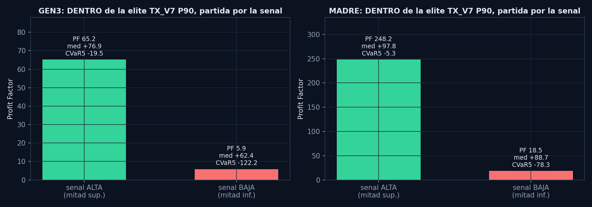
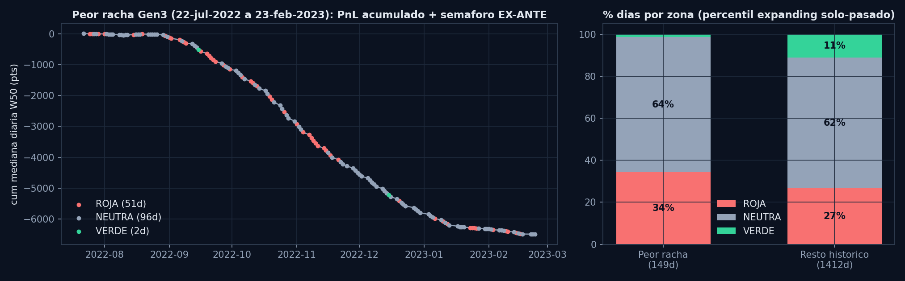
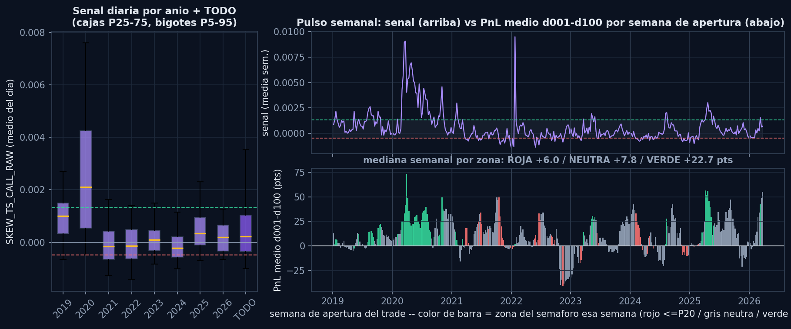

Que estas viendo. Un termometro diario de UNA sola cosa: donde esta pagando el mercado la prima del skew de calls del SPX. Si la paga en los vencimientos lejanos (donde la estrategia Batman LT COMPRA su pata grande), el viento sopla a favor. Si la paga en los cercanos (donde la estrategia VENDE), el viento sopla en contra. La linea del grafico es ese "donde" traducido a percentil 0-100 contra toda su historia: 90 significa "mas a favor que el 90% de los dias que hemos visto desde 2019".
Como se usa, paso a paso. Mira el numero grande de arriba a la derecha y su color. Eso es todo lo que este semaforo te dice hoy:
ROJA (percentil 20 o menos) —
dia flojo para abrir Batman LT nuevos. Historicamente, los trades abiertos en dias rojos apenas
ganaron mas que una moneda al aire. No significa "vende lo que tienes": significa "hoy no pises
el acelerador".
NEUTRA (entre 20 y 80) —
dia normal. Opera como siempre: que decida tu criterio de seleccion de estructuras habitual.
Este semaforo no opina.
VERDE (80 o mas) — dia bueno
para dar prioridad a esta estrategia. En el backtest, los mejores trades abiertos en dias verdes
casi no tuvieron dias malos: el riesgo de cola se dividio entre 6 y 14.
TURBO (95 o mas) — la version
rara y potente del verde (~1 dia de cada 20). Historicamente, la mejor relacion
ganancia/sustos de todo el historico.
Lo que este semaforo NO hace (importante, y es a proposito): (1) No elige trades — todos los candidatos de un mismo dia ven casi el mismo color; para elegir ENTRE estructuras estan los scores de seleccion, no esta pagina. (2) No protege en un crash — en la peor racha de la historia reciente (verano 2022 a invierno 2023) este semaforo no se puso rojo a tiempo; lo que SI hizo fue no dar ni un solo dia verde en 7 meses. Es un acelerador inteligente, no un freno de emergencia: el freno son los filtros de regimen principales (PUT SKEW / TRIPLE_OR). (3) No predice la direccion del SPX — mide la superficie de volatilidad, no hacia donde va el indice.
La pastilla de fecha junto al numero grande te dice de cuando es el dato. Si pone "hoy" o "hace 1d", perfecto (el dato se refresca cada tarde tras el cierre de datos). Si se pone ambar o roja ("STALE"), el dato ha envejecido y el semaforo esta oficialmente mudo: mejor sin senal que con senal caducada.
Y el banner amarillo de arriba: esta senal paso todas las pruebas estadisticas sobre datos historicos (2019-2026), pero empezo a rodar en vivo el 7 de julio de 2026. Hasta acumular meses de rodaje real, se publica como observacion — sin poder automatico sobre el tamano de las posiciones. La honestidad de esa espera es parte del metodo.
Cuando la prima del skew de CALLs esta concentrada en la expiracion BACK (donde el
Batman LT COMPRA el body x2) y no en la front (donde VENDE los wings), la estructura compra donde la
superficie esta sostenida y vende donde se desinfla. Formula cerrada, sin percentiles en el input:
skew_25d_vs50[back] - skew_25d_vs50[front]; el percentil expanding (solo-pasado) traduce
el nivel a zonas operativas.
| Zona | Percentil | Lectura operativa | Elite P90 backtest (Gen3 / Madre) |
|---|---|---|---|
| TURBO | ≥ 95 | Maxima prioridad / sobre-ponderar | PF 52.4 / 48.4 · CVaR5 -29 / -43 |
| VERDE | ≥ 80 | Acelerar (umbral validado dentro de elite TX_V7) | PF 40.7 / 647 en elite TX |
| NEUTRA | 20 - 80 | Operar normal (decide el sort) | — |
| ROJA | ≤ 20 | Reducir / no abrir | WR 53-58% en Madre (casi moneda al aire) |
Nota: la respuesta economica NO es lineal — standalone el salto real esta en P90; operando la elite TX_V7 (caso real) el liston baja a P80. Detalle completo en la seccion de evidencia.
Descubierta en la busqueda masiva CazaEdge "venta cara / compra barata" (2026-07-06): ~105 candidatos en 5 familias (theta por pata, riqueza IV, superficie CALL 3D, economia del credito, interacciones), evaluados contra una puerta de 8 tests anti-overfit en DOS universos de backtest (Gen 3 brazo neutro: 511.389 trades / 1.811 dias; Madre TRUE: 46.126 / 1.614 dias). Fue el UNICO candidato que paso la puerta completa — en tres evaluaciones independientes.
Tomar la elite P90 del sort YA en produccion (TX_V7) y partirla por la mediana de la senal nueva. Si la mitad "senal alta" no es mejor, la senal no anade nada operable. Resultado, consistente en ambos universos: los dias de senal alta concentran practicamente todo el profit factor y reducen la cola a 1/6 - 1/14.
| GEN3 | MADRE (TRUE) | |||||
|---|---|---|---|---|---|---|
| Mitad de la elite TX | mediana | PF | CVaR5 | mediana | PF | CVaR5 |
| Senal ALTA | +76.9 | 65.2 | -19.5 | +97.9 | 248.2 | -5.4 |
| Senal baja | +62.4 | 5.9 | -122.2 | +88.7 | 18.5 | -78.3 |

La mediana apenas cambia entre mitades: la senal no elige trades "mas rentables", elige dias sin accidentes. Por eso es un gate de sizing, no un ranker.
Durante los 149 dias del peor drawdown historico de Batman LT (-6.492 pts en mediana diaria), el semaforo NO fue alarma de evacuacion (64% de los dias en NEUTRA) pero silencio el acelerador por completo: solo 2 dias VERDE en 7 meses (1%) frente al 11% habitual. Con el sizing atado al semaforo se pasa la racha entera en tamano minimo. Al salir de la racha el verde reaparece (8%) con mediana diaria +20.

Distribucion de la senal por anio (2020 vivio estructuralmente alto; 2021-2024 frios; 2025-2026 volviendo a niveles medios-altos) y el pulso semanal: el PnL medio de la trayectoria temprana (d001-d100) de los trades abiertos cada semana, coloreado por la zona del semaforo esa semana. Mediana semanal: VERDE +22.7 pts vs NEUTRA +7.8 vs ROJA +6.0 — las semanas verdes parieron trades ~3x mejores.

Fuente: grid de superficie CALL SPX (dia x dte_target, snapshot 10:30 ET), reconstruido a diario
desde datos de opciones propios. Serie: mean(skew_25d_vs50[400] - skew_25d_vs50[f])
para f en {250, 300, 200}; percentil expanding solo-pasado (min 250 obs). Este dashboard se
actualiza automaticamente tras el pipeline diario; si el dato envejece, la pill de staleness
junto al ultimo dato lo indica (el sistema interno degrada a SIN_DATO a los 5 dias: nunca
consume dato viejo en silencio).